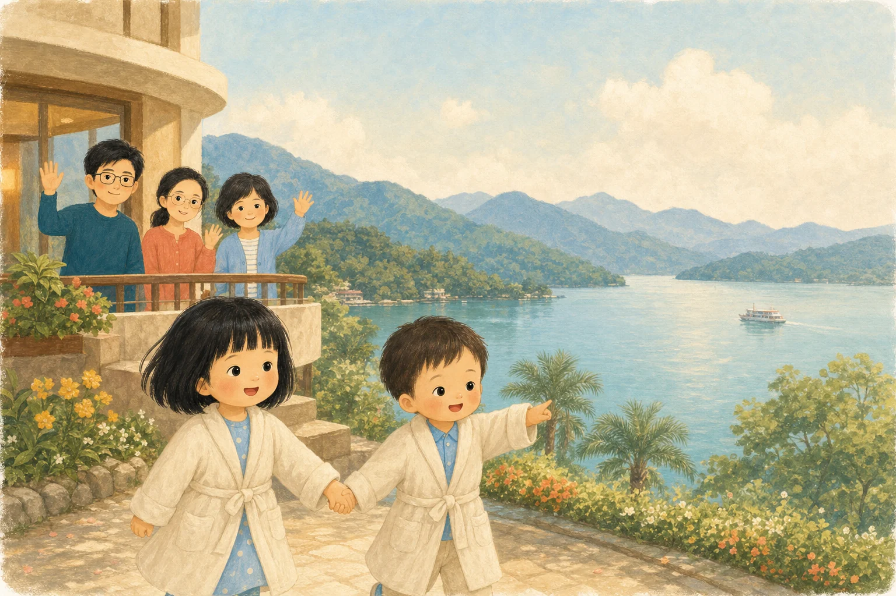
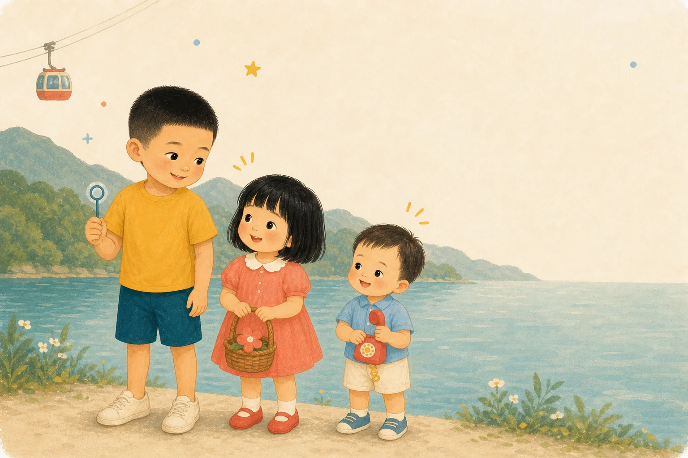
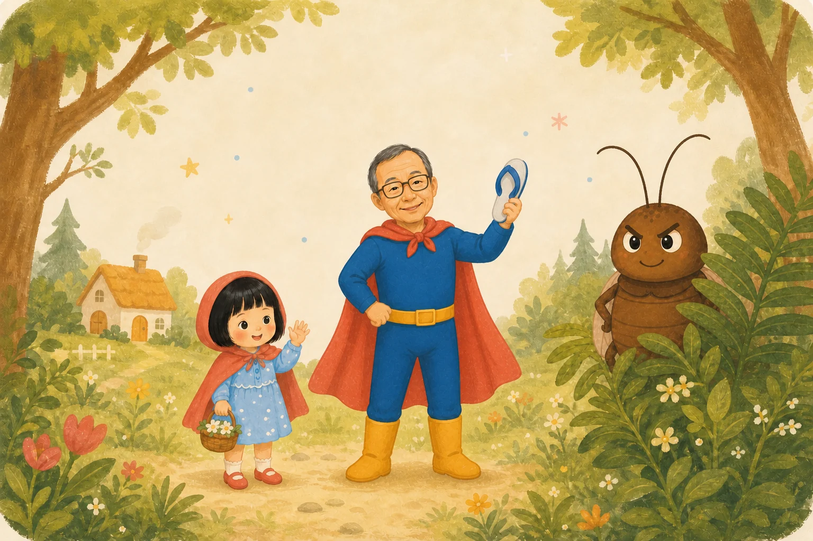
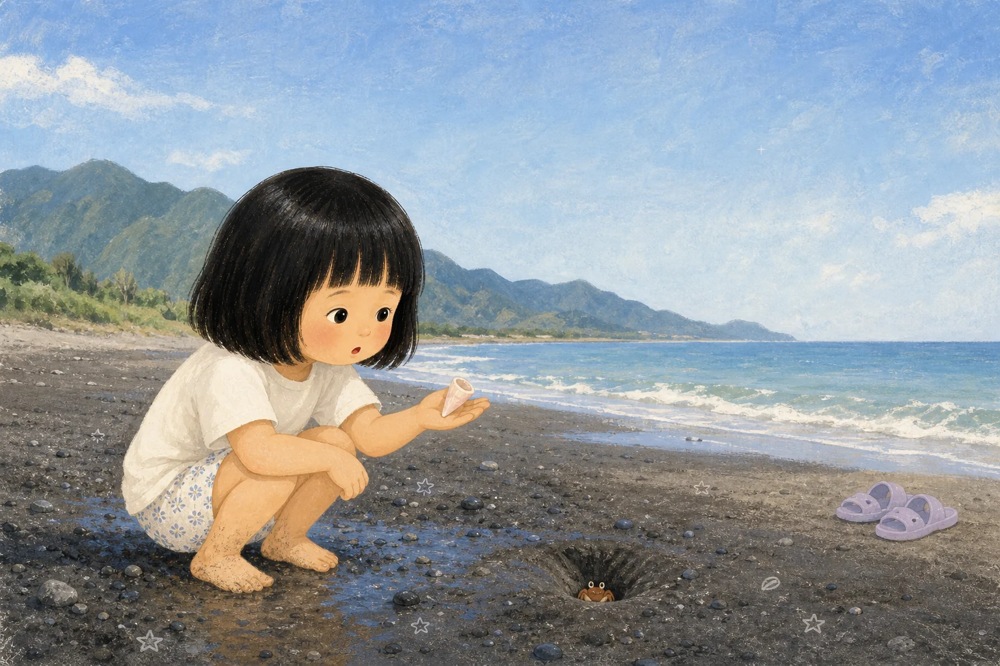
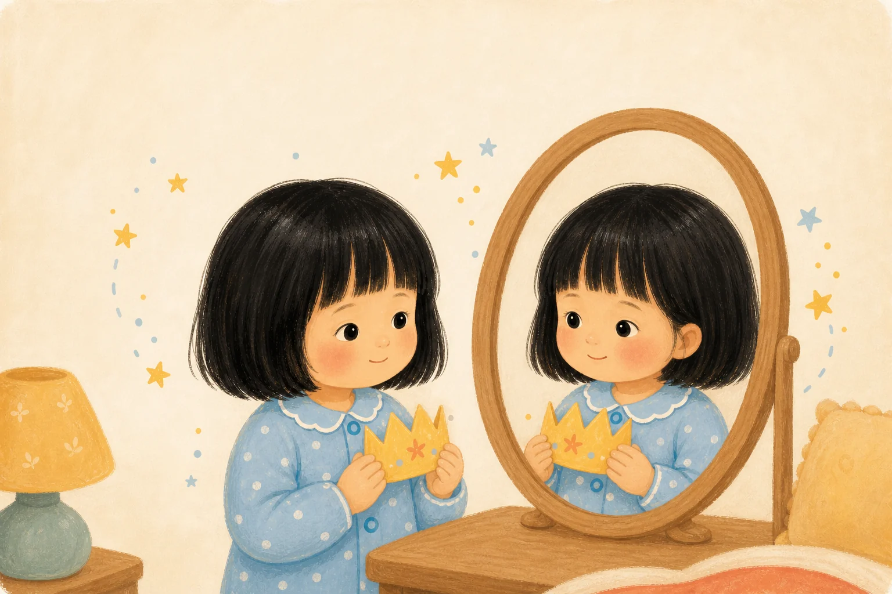
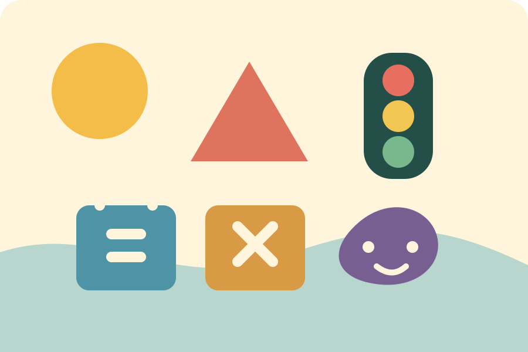
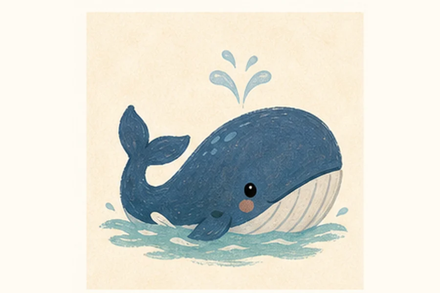

01 · SCHOOL
學校相關
把 16 段 Pony 英文課 〈I Grow Up〉整理成短短的聽說遊戲。
PONY CLASS · I GROW UP
英文課遊戲屋
把身體部位、五官功能、數量、U–Z 字母音與放學對話，變成孩子一聽就能玩的短任務。
- 4–7 分鐘
- 一次玩一小口
- 先聽再點
- 不用先會認字
- 安心探索
- 不倒數、不扣分
02 · PICTURE BOOKS
繪本相關
選一本故事，一起看圖、翻頁、聽中英文旁白。

ELLIE + LUCAS · 雙語
Sun Moon Lake Hotel Adventure
泳池、小車車與一家人的溫暖旅行。

三兄妹 · 雙語
Sun Moon Lake Sharing Adventure
在遊戲中練習分享，也接住小小擔心。

ELLIE + 爺爺 · 雙語
我的超人爺爺－打蟑螂篇
呼叫手環、藍白拖鞋和勇敢相救的森林冒險。

ELLIE · 雙語
Ellie's Taitung Starry Adventure
粉紅貝殼、海邊朋友和裝滿星光的拖鞋。

LUCAS · 雙語
Lucas 的花蓮夏天
七星潭的大海浪，和水盆裡的小水花。

ELLIE · 雙語
Ellie's Big-Kid Magic
一個關於長大的溫柔晚安故事。

ELLIE · 雙語
Ellie and the Octopus Mouth
跟奶瓶說晚安的爆笑小夢。

ELLIE · 雙語
Ellie's Try-Again Magic
試一試、學一學，再來一次。

ELLIE · 雙語
Ellie and the Busy Little Fingers
讓好奇小手找到新的工作。

SARAH 創作 · 雙語
Ellie's Princess Glow
好好照顧自己，也看見本來就閃亮的自己。
03 · AGE FOUR
4 歲能力遊戲
不是考卷，是用手指探索形狀、數量、記憶、順序與情緒。

AGE 4 · 中文 / ENGLISH
開始玩 →
城市學習遊戲館
10 款手機和平板友善的觸控遊戲，每款從單一步驟慢慢走到記憶與規則切換。
- 形狀與數量
- 聽覺與順序
- 情緒與生活規則
04 · AGE FIVE
5 歲小小探索家
40 堂核心短課，加上四款看、聽、記住與依序操作的記憶遊戲。

AGE 5 · 中文 / ENGLISH
開始探索 →
記憶力遊樂園
不需要先會認字；自然語音會念題目，孩子用大圖卡完成翻牌配對、誰不見了、聲音找朋友與記住順序。
- 44 款遊戲
- 264 個短關卡
- 自然中英文配音